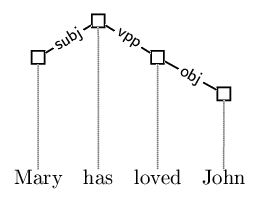
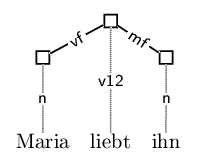
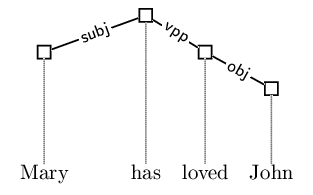

| << Previous | - Up - | Next >> |
The LaTeX-style file "dtree.sty" defines three environments:
idtree for ID trees, lptree for LP trees and
thgraph for TH graphs. ID trees (and TH graphs) are drawn
as follows:
\begin{idtree}
\node{1}{2}{Mary}
\node{2}{1}{has}
\node{3}{2}{loved}
\node{4}{3}{John}
\edge{2}{1}{subj}
\edge{2}{3}{vpp}
\edge{3}{4}{obj}
\end{idtree}
This results in the following tree depiction:

In the idtree-environment, the command \node
creates a node. It has three arguments: the first is the node's
identification number (from now on just number), the second
is the vertical position of the node in the tree (1 = top) and the
third is the string corresponding to the node. The first node in the
above example is defined as \node{1}{2}{Mary}: its
identification number is 1, its vertical position is
2 (one position below the top node) and the corresponding
string is Mary. Edges in the ID tree are drawn using the
\edge-command: the first argument is the number of the
mother and the second is the number of the daughter. The third
argument denotes the edge label. The first edge in the example above
is \edge{2}{1}{subj} and goes from node 2 to
node 1 and is labeled with subj.
LP trees are drawn similarly. Here is an example:
\begin{lptree}
\node{1}{2}{Maria}{n}
\node{2}{1}{liebt}{v12}
\node{3}{2}{ihn}{n}
\edge{2}{1}{vf}
\edge{2}{3}{mf}
\end{lptree}
Resulting in the following picture:

There is only one difference between the idtree- and the
lptree-environments, viz. that the
\node-command in the latter has a fourth argument denoting
the node label. The first node in the above example thus has node
label n.
It is also possible to increase the spacing between two columns in
either the idtree- and the
lptree-environments by using the command
\dtreeExtraColsep. \dtreeExtraColsep has two
arguments: the first is the node whose corresponding column spacing is
to be increased and the second is the length to add to the default
column spacing. Here is an example:
\begin{idtree}
\dtreeExtraColsep{1}{20pt}
\node{1}{2}{Mary}
\node{2}{1}{has}
\node{3}{2}{loved}
\node{4}{3}{John}
\edge{2}{1}{subj}
\edge{2}{3}{vpp}
\edge{3}{4}{obj}
\end{idtree}
Resulting in the following picture

Here, the spacing between the first and the second column is increased
by 20pt.
This package also includes an emacs mode called dg defined in the file "dg.el". The emacs mode provides keyword highlighting for grammar files (extension "dg"). The emacs mode is activated for all files whose first line is:
// -*-dg-*-
| << Previous | - Up - | Next >> |